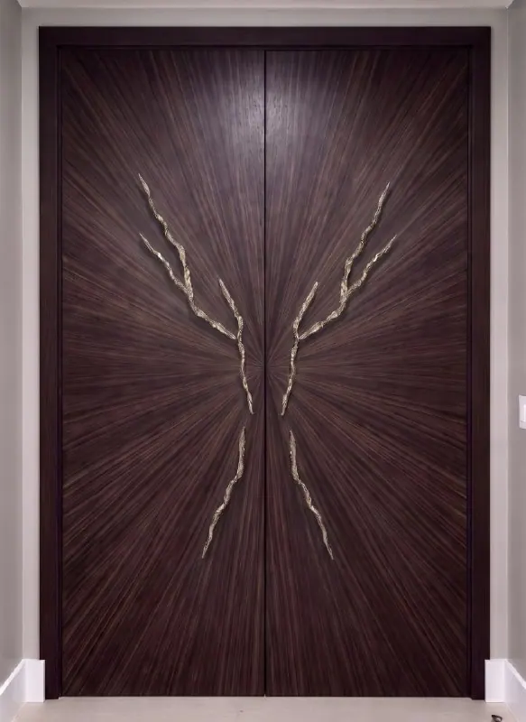
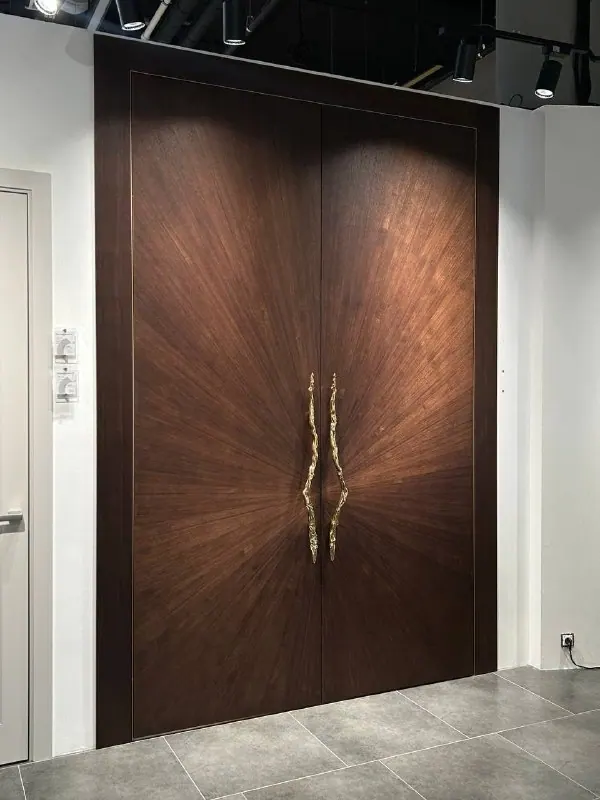
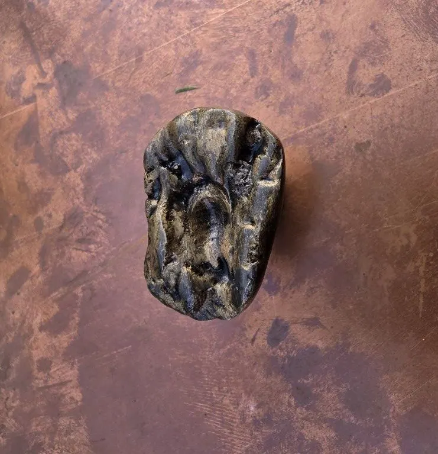

Будем рады видеть на выставке Мебель 2026.
SALNIKOVA artО выставке

МЕБЕЛЬ-2026 · РОССИЯ · Стенд 15C115
Дата среза карточки: 16.11.2026 11:21
Посмотреть официальную схему →
Мебельная фурнитура
Официальный каталог подтверждает название компании, страну и стенд. Сайт и открытые контакты добавлены только при наличии строки в официальном путеводителе и успешной проверке сайта. Отсутствие контакта в карточке не означает, что у компании его нет.
Будем рады видеть на выставке Мебель 2026.

Альбом · 3Большая, интересная работа с дизайнером!! Первоначальная идея состояла в создании дверной ручки, по композиции напоминающей силуэт дерева или симметричные ветки. Мы разработали базовый элемент всей конструкции, фактурную ручку «Волга» в формате мини. Затем, из восьми одинаковых элементов, дизайнер создал свою неповторимую инсталляцию!!
 Альбом · 5
Альбом · 5
Ручка «Гала», одна из самых первых наших моделей. Ее прототип в дереве, был найден в воде, бережно высушен и окрашен в белый цвет, чтобы не отвлекаться на структуру. Уникальность модели была понятна сразу: природный изгиб, идеально «ложился» в ладонь, как будто, этот фрагмент деревяшки был…

Новая версия консоли серии Алиса с опорами Тая и ручками с покрытием никель. Визуализируем для заказчика, но понравилось и нам!

Фото от наших партнеров в Екатеринбурге @butchaaa Ручка «Волга 700» на роскошных дверях в шпоне, цвета шоколад!
 Альбом · 10
Альбом · 10

Альбом · 4Патина- химическое покрытие на латуни, эффект состаривания, которое само по себе, имеет несколько оттенков. Тот случай, когда нужны деликатные, не яркие акценты в виде фурнитуры.
Источники: